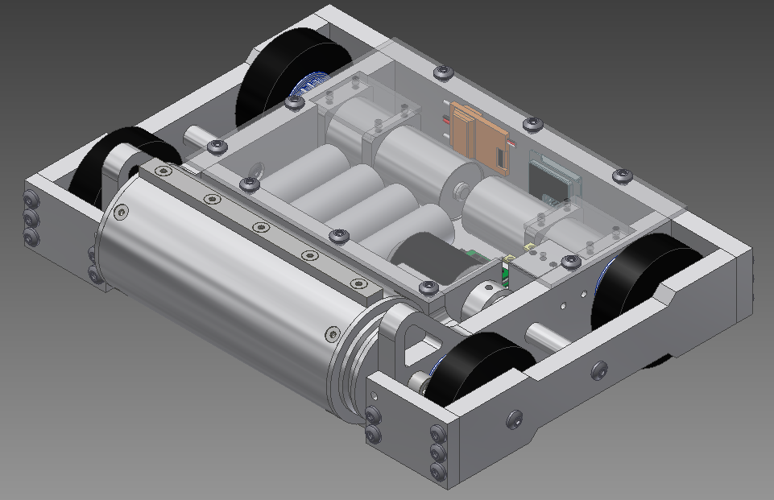

Alumiknight: Self-designed 15lb fighting robot
AlumiKnight is a proposed 15 lb AlumiKnight design for the perennial competition Rage in the Cage 2015. It utilizes a powerful drum that weighs approximately 4 lb and is powered by the AXI 2826/08 brushless motor. This weapon will rotate clockwise and that rotation will subsequently flip and inflict damage on our opponents. The robot was also designed to have a low to the ground profile to make wedges less effective against it. The frame is made out of ½” thick aluminum which will provide effective protection against other robots. The robot is made completely invertible in the event that it gets flipped over since the frame sticks out enough to drive on the frame and rear wheels while upside down. The robot will be running on a 14.4V lithium ion battery that will power the drive and weapon motors. Additionally, AlumiKnight is a four wheel drive robot; it uses slave drive to enhance the robot’s agility.
AlumiKnight utilizes a drum weapon which is 3.5” from tooth to tooth, while the cylinder itself is 3” in diameter (teeth stick out 0.25” each and are 0.4” thick). The cylinder is made out of aluminum 6061 while the teeth are made out of S7 tool steel. The drum is attached to a v-belt pulley that is powered by an AXI 2826/08 brushless motor which is driven on a 14.4 V battery with a Phoenix 80 for control. The entire weapon system is approximately 4 pounds.
AlumiKnight’s has a four wheel drive system powered by Banebots 25:1 Planetary Gear motors. Two drive motors are directly connected to the back wheels, and the front wheels are connected to the driving system with pulleys. This will greatly enhance AlumiKnight’s driving ability. Each wheel is 3” in diameter.